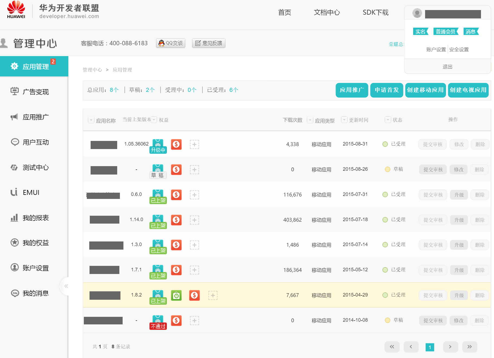
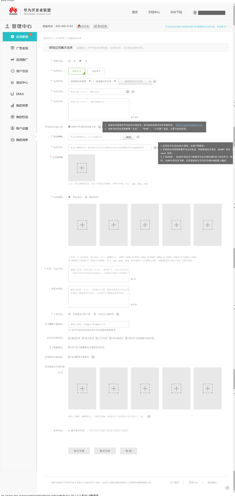
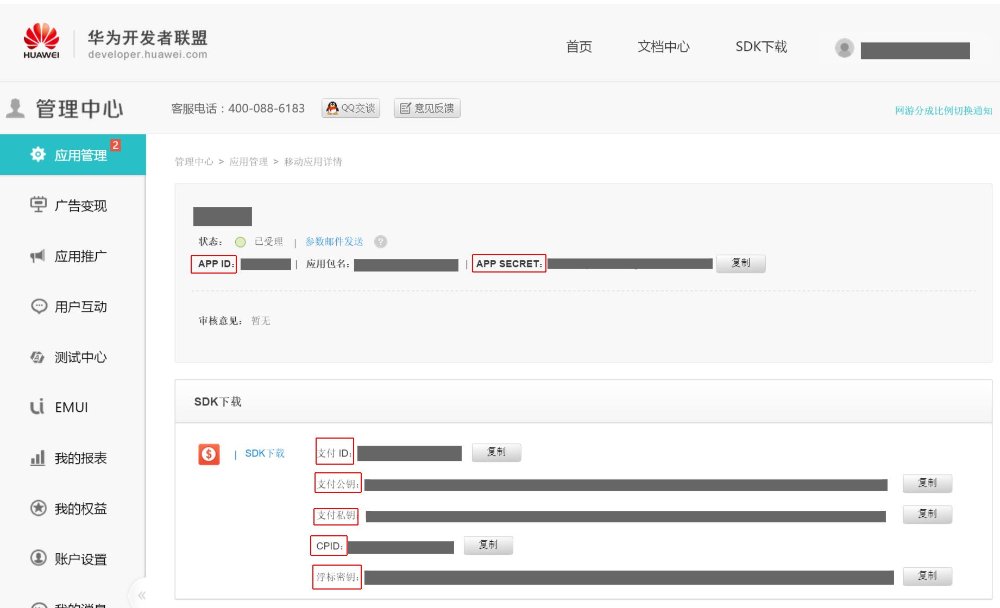

华为官方后台地址：http://developer.huawei.com/
西瓜SDK所需的参数APP ID、APP SECRET、支付ID、CPID、支付公钥、支付私钥、浮标密钥均在华为后台获取。
获取参数步骤：1. 注册开发者账号；
2. 登录华为渠道后台，2.进入会员中心，点击“应用管理”再点击“提交应用”，进入该页面，然后点击“创建移动应用”；

3. 填写游戏的基本信息，点击“提交审核”；

4.点击进入会员中心–>应用管理–>移动应用详情，获取到的参数如下所示 ；

5. 参数中所需的username（游戏公司名称，成功支付后会显示）可以在会员中心->账户设置->基础资料中 获取，即“企业全称”。